| ・最終卒論発表リハーサル (H24.02.21) | |||
2回目リハーサルから4日。あしたがいよいよ本番です。発表時間の10分に入れられるようになっていましたね。よくある練習しすぎて10分切ったパターンです。本番は気持ちゆっくりめでちょうど良いのではないでしょうか。まぁ今日は軽く流す感じです。 |
|||
|
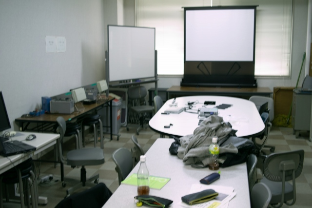
練習しすぎ |
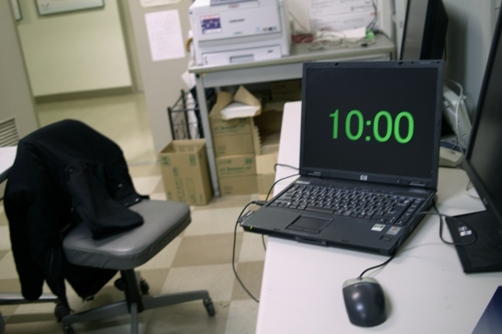
本番さながらの練習です | ||
|
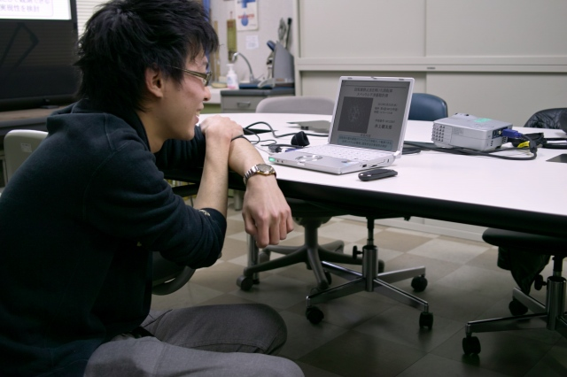
準備さえしていれば安心 |
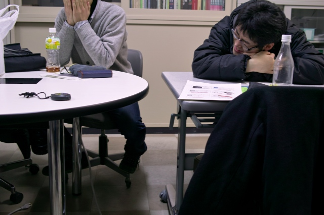
あー明日かぁ | ||
|
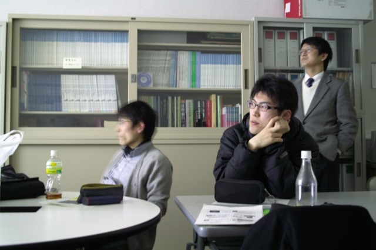
うーん、良い感じ |
最後のスライドの一つ手前でこれなら余裕 | ||
|
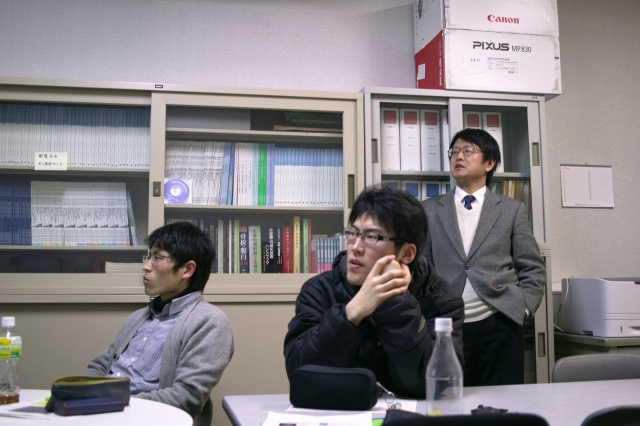
村田先生「あとは質問にしっかり答えましょう」 |
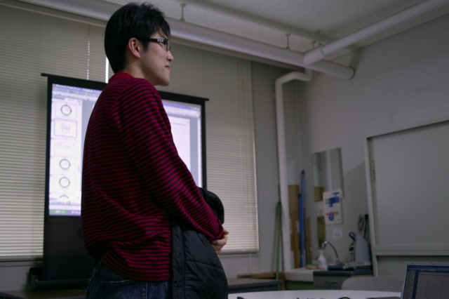
上着を脱いだら本気です | ||
|
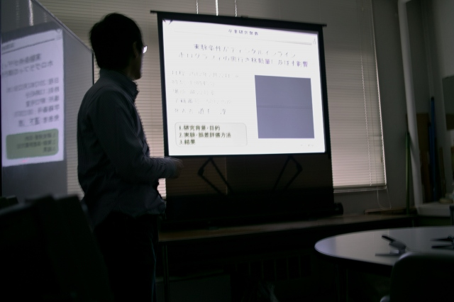
M下くんの発表 |
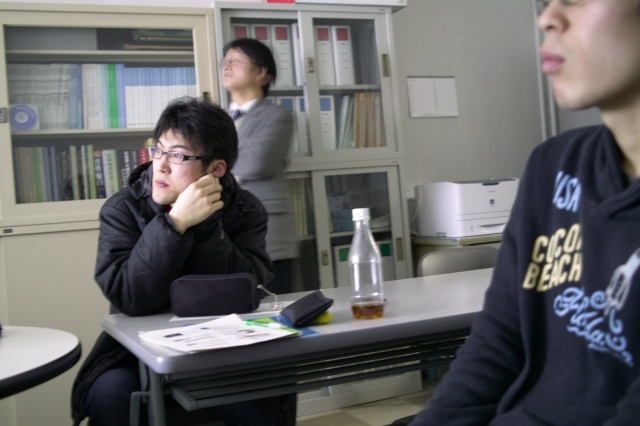
へぇー | ||
|
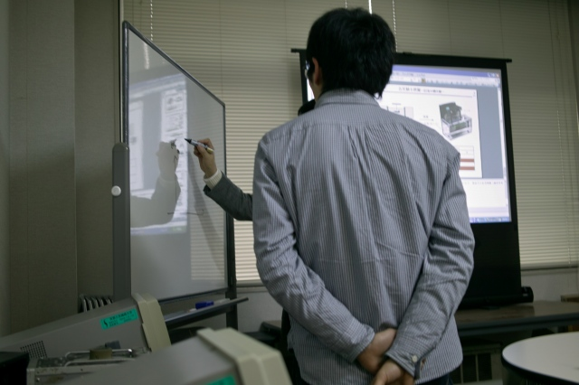
ここはこれでいいの？ |
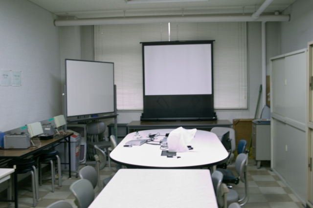
明日はいよいよ本番！ | ||